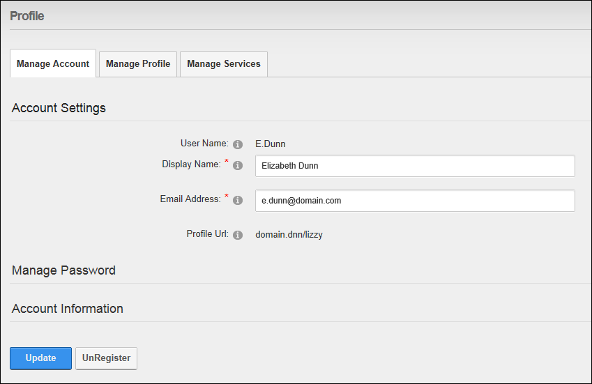

Unregistering your User Account
How to unregister from a site. This closes your user account preventing you from accessing areas of the site which are restricted to logged in users. Note: Administrators can restore your account or permanently delete it.
- Login to the site. See "Logging into a Site"
- Click on your [Display Name] link (typically located in the top right corner of the site) - OR - Navigate to a View Profile (also called My Profile) module. This displays the user profile page.
- Click the Edit Profile button. This displays the Manage Profile Page.
- Select the Manage Account tab.
- Click the UnRegister button. This displays the message "Are you sure you want to un-register?"

-
You are now unregistered and have been automatically logged out of the site. A message is sent to you confirming that your account has been unregistered. A message is also sent to the Administrator advising that you have unregistered.